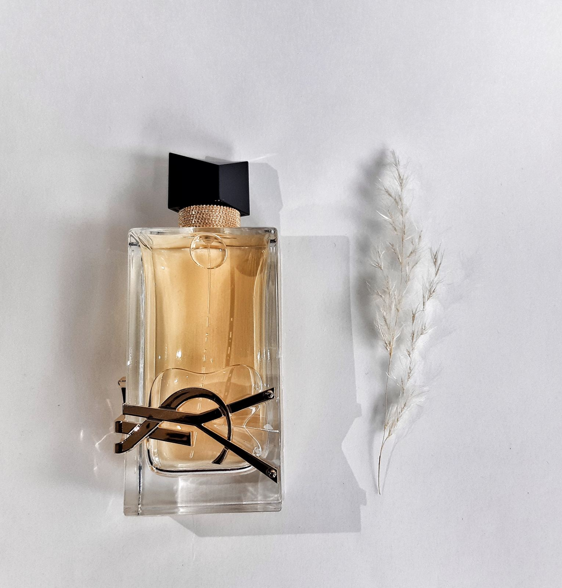
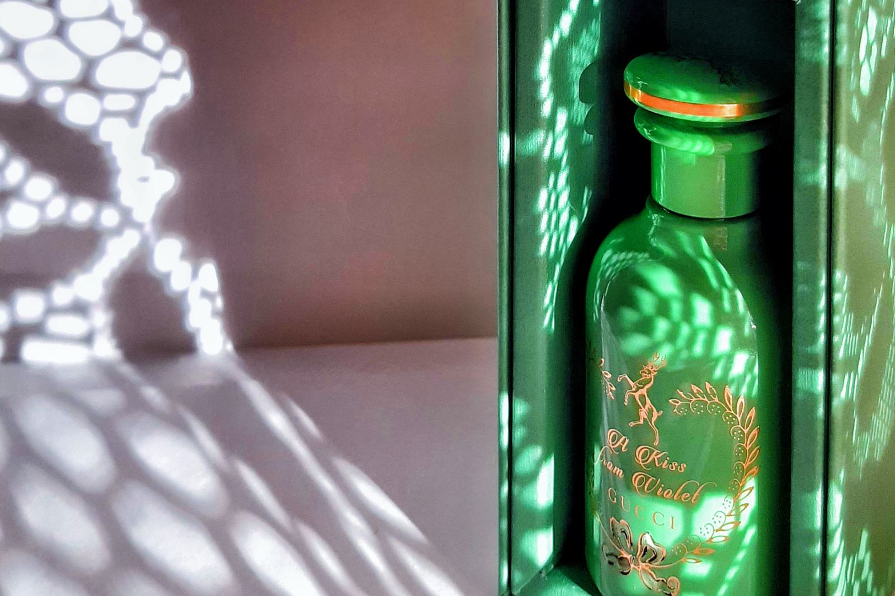

რა არის სურნელი?
 სურნელი პირდაპირ კავშირშია ემოციებთან .
რა თქმა უნდა არომატისადმი დამოკიდებულება ინდივიდუალურია. არის შემთხვევა, როდესაც არომატს აბსოლუტურად სხვა მოთხოვნილებებიდან გამომდინარე ვანიჭებთ უპირატესობას:
- გვსურს შთაბეჭდილება მოვახდინოთ გარშემომყოფებზე
- გვსურს ხაზი გაუსვათ ჩვენს სტილს, სტატუსს, ხასიათს
- ან გვინდა რომ უბრალოდ გარკვეული განწყობა შევიქმნათ
ჩამოთვლილი შეესაბამება სიმართლეს თუ დავეთანხმებით თანამედროვეობის ერთ-ერთ ვირტუოზ პარფიუმერს, ფრანსის კურკჯანს
სუნამო ყოველთვის ცდუნებაა, ხოლო ცდუნება არის ძალაუფლება ადამიანებზე. შეიძლება იმეოროთ რამდენიც გსურთ, რომ თქვენთვის
იპკურებთ სურნელს. მაგრამ იმ მომენტში, როდესაც თქვენს ოთახს დატოვებთ, ეს სურნელი დიალოგს ამყარებს სხვა ადამიანებთან.
სუნამოს კონცენტრაცია
 არომატის შერჩევისას უმრავლესობა
დიდ მნიშვნელობას ანიჭებს სურნელის მდგრადობას, ამ შემთხვევაში დაგეხმარებით რომ გავერკვიოთ თუ რა განსხვავებაა არომატების სამყაროს მნიშვნელოვან კატეგორიებში, ესენია:
კოლონი, ტუალეტის წყალი, სუნამოს წყალი, სუნამო.
- კოლონი 3%_დან-5%_მდე
- სუნამოს მცირე კონცენტრაცია და სპირტის დიდი შემცველობა. კოლონი ყოველთვის დიდი მოცულობის ფლაკონებშია მოთავსებული. კლასიკური კოლონი
ტრადიციული "რეცეპტით" მზადდება, სადაც დიდ წილად გამოყენებულია მცენარეული და ციტრუვანი ნოტები, იშვიათია საბაზისო ნოტების გამოყენებაც. მათი მდგრადობა 2 საათამდე გასტანს.
- ტუალეტის წყალი 5%_დან-15%_მდე
- ამჟამად ყველაზე პოპულარული მსუბუქი და სასიამოვნო კომპოზიციები სწორედ ამ ფართო ასორრტმენტის მქონე კატეგორიას განეკუთვნება. მათი გამოყენება დღის პერიოდით
შემოიფარგლება, ხოლო მდგრადობა მაქსიმუმ ოთხ საათამდე გასტანს.
- სუნამოს წყალი
- კონცენტრაცია 15%_დან-20%_მდე, განკუთვნილია მათთვის ვისაც სურს, რომ სურნელი ხანგრძლივი პერიოდის განმავლობაშ რჩებოდეს. დღის მეორე ნახევრისთვის განკუთვნილი
სუნამოს წყალი შეუმჩნეველს არ დაგტოვებთ შედარებით გრილ საღამოს, მათი მდგრადობა კი შემოიფარგლება ოთხიდან ხუთ საათამდე.
- სუნამო, სუნამოს ექსტრაქტი
- კონცენტრაცია 15%_დან-40%_მდე. სუნამოს შემთხვევაში სუნამოს დიდი ნაწილის კონცენტრაცია მერყეობს 20%_დან-40%_მდე, ძირითადად კი 15%_დან-30%_მდე.
ჩამოთვლილთაგან სუნამო მეტი მდგრადობით გამოირჩევა და მერყეობს ექვსიდან რვა საათამდე. სუნამო ყველაზე ძვირადღირებულია კონცენტრაციის
მაღალი შემცველობის გამო.